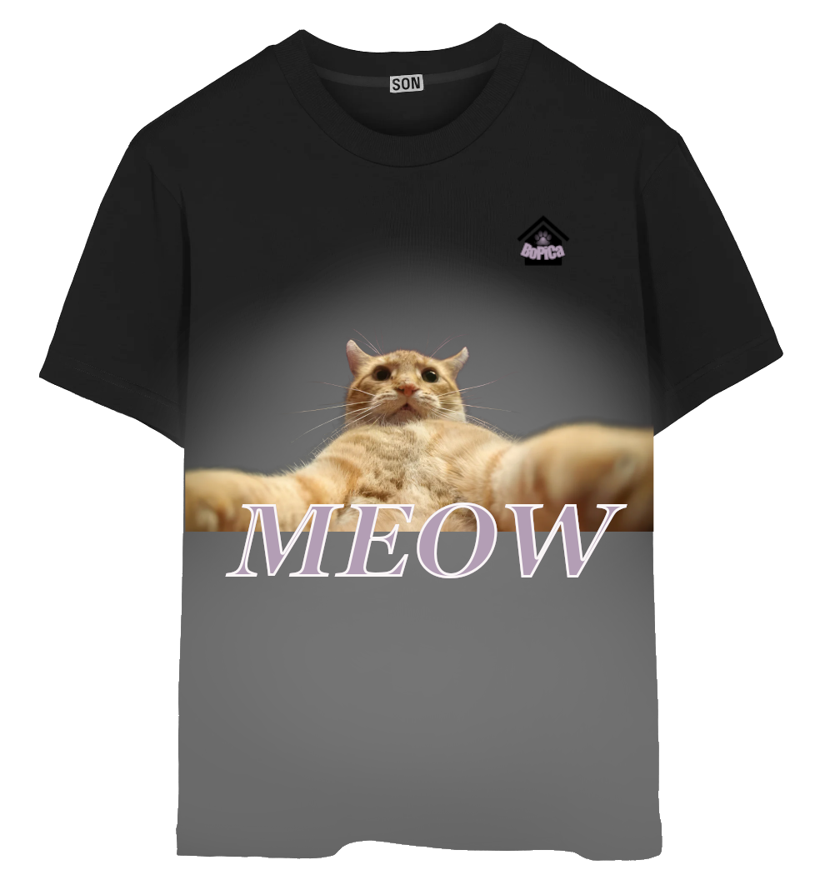

U nastavku je prikazan logotip i postupak izrade u programu Inkscape.

Majica skloništa "BoPiCa"
Postupak izrade
Pri pokretanju programa GIMP odabrala sam opciju Create a New
Image, nakon čega sam na bijelu pozadinu koristeći
Ctrl + V
zalijepila sliku crne
majice
preuzete s interneta. Radi lakšeg snalaženja, dvostrukim klikom na
sloj promijenila sam ime sloja u “Majica”.
Koristila sam Fuzzy Select Tool kako bi označila bijelu pozadinu
oko majice te je uklonila tipkom Delete
Zatim sam iskoristila opciju
Select → Inverse kako bi se selekcija odnosila
samo na oblik majice. Nakon toga, u panelu sa slojevima na desnoj
donjoj strani ekrana, kreirala sam novi sloj i imenovala ga
“Dizajn”.
Označivši taj sloj, izabrala sam opciju
Add Layer Mask. Alatom
Bucket Fill Tool, označeni oblik majice ispunila
sam crnom bojom, a zatim sam koristeći opciju
Colors → Invert izvrnula boje. Time je pozadina
postala crna, a majica bijela, što je omogućilo daljnju obradu
dizajna.
Odabirom željene sive boje i korištenjem alata
Paintbrush Tool obojila sam određene dijelove
majice.
Nadalje, ponovno sam korištenjem Ctrl + V u
dokument umetnula željenu sliku.
mačkeAlatom Unified Transform Tool prilagodila sam
veličinu slike kako bi odgovarala dimenzijama majice, a
Move Tool koristila sam za pozicioniranje slike
na željeno mjesto.
Zatim sam koristila Text Tool za unos teksta te
odredila željenu boju, veličinu i font. Tekstu sam dodala bijeli
obrub debljine 3,0 px koristeći opciju
Style → Outlined and filled, uz odabir postavke
Outline options: Solid color.
U završnoj fazi umetnula sam logotip BoPiCa koji sam smanjila
pomoću alata Unified Transform Tool te
pozicionirala na odgovarajuće mjesto korištenjem alata
Move Tool.
Majicu sam izvezla u .png formatu opcijom
File → Export.